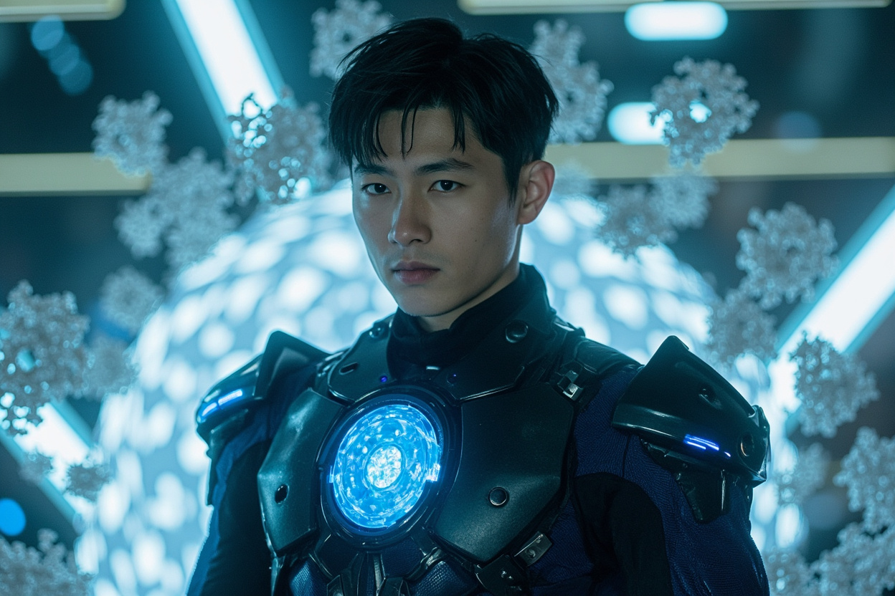
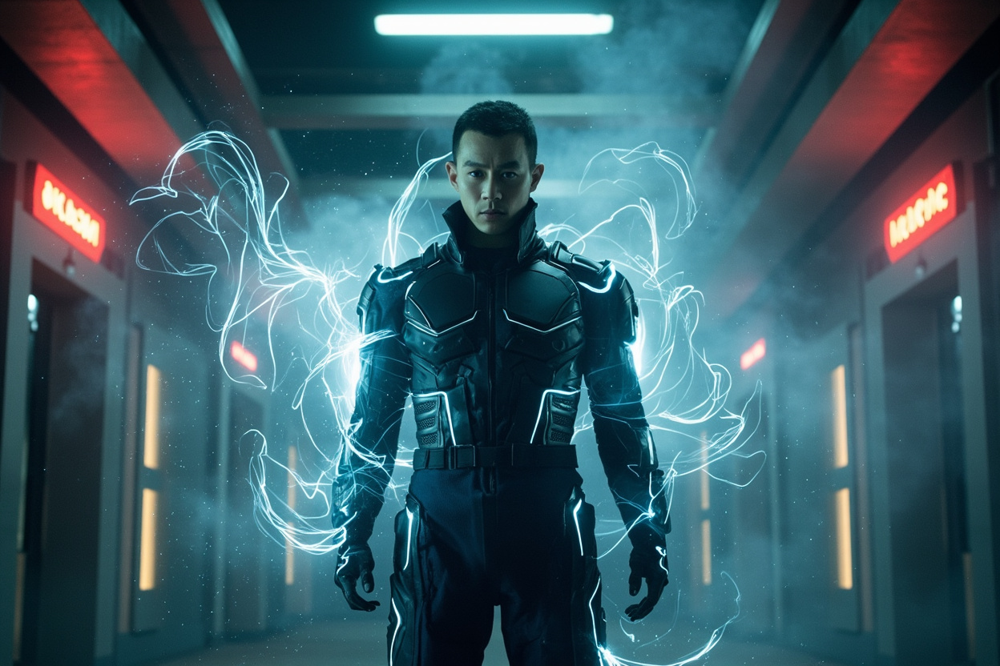
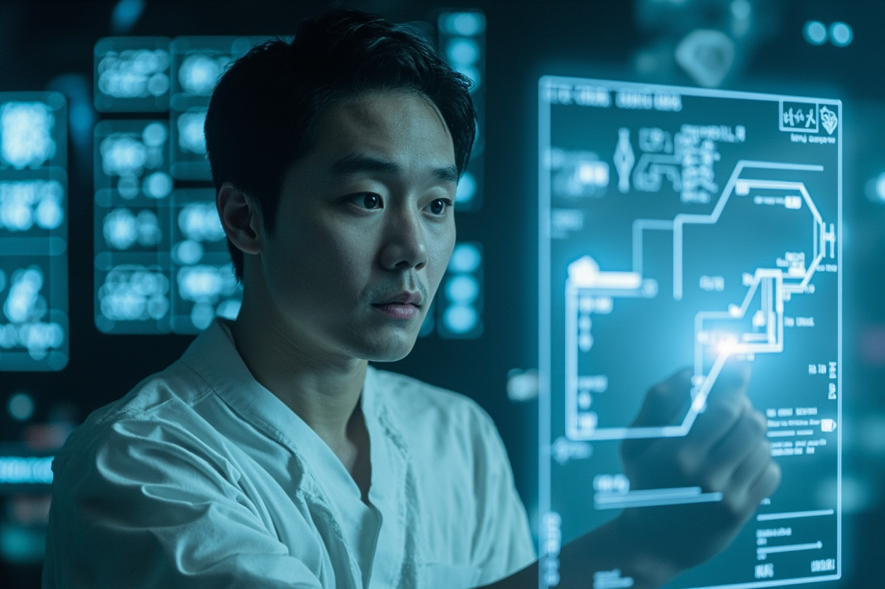

🎧 點擊播放有聲朗讀
林塵站在實驗室中央，四周環繞著全息投影的數據流。空氣中懸浮著數百個微小的銀色顆粒，在靈氣場的作用下緩緩旋轉，形成一個複雜的立體陣法。數以億計的納米機器人正沿著他的血管流動，攜帶著特殊的靈氣轉化模組，開始在體內構建全新的能量循環系統。
全息投影顯示，體內的納米機器人正在自行組合成更複雜的結構。它們不再僅僅構建經脈網絡，而是開始形成微型的聚靈陣、防禦陣、甚至攻擊陣法——全部在細胞層面。這些通道以分形幾何的方式分佈，效率是傳統經脈的三倍以上，每個重要穴位處都形成了一個微型的靈能反應堆。

實驗室的燈光突然閃爍，牆壁上的靈能監測儀發出刺耳的警報聲。空氣中的靈氣粒子正在以異常的規律震動，形成一道道肉眼可見的波紋。天樞集團正在遠程干擾，干擾強度持續增加，納米單元自組織進度已達37%，即將超出可控範圍。林塵咬牙啟動自修復協議，應對這場科技與修真的雙重挑戰。
汗水從林塵額頭滴落，在接觸地面的瞬間蒸發成靈氣霧氣。他的身體表面浮現出銀色的紋路，那是納米經脈系統正在與肉體融合的跡象。突然，干擾停止了，實驗室恢復平靜。他睜開眼睛，瞳孔深處閃過一絲銀芒——納米修真系統1.0版本上線，當前修為評估：築基中期。

全息屏幕彈出新消息，發送者正是天樞集團的趙無極。林塵解鎖加密文件，看到一段古老的設計圖紙，上面繪製的裝置與他體內的靈芯系統有七成相似。文件的簽署日期是三百年前，而簽名者的名字讓林塵的呼吸幾乎停止——林清源，他失蹤了五十年的父親的名字。跨文明傳承裝置的真相，即將揭曉。